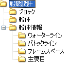

部材の管理
各部材は要素グループを用いて階層的に管理します。
船殻設計用に特に船殻設計ウィンドウが用意されていますのでこれを使用します。
グループ構成
船殻設計配下に以下ような要素グループが作られます。

-
ブロック
船体を構成する各ブロック毎にこの要素グループ配下に要素グループを作成します。さらに中組、小組といった階層を全て要素グループとして作成して、部材ソリッドを管理します。(階層の深さはいくつあってもかまいません。)
部品図などでのブロック名、要素名はこの要素グループ階層から取得します。
各ブロックの船体ソリッドなどはブロックのグループ直下で管理するようにします。プレートコマンドでリストから選択できるようになります。
 この例では"BLK1"と"BLK2"の２つのブロックが作成されています。ブロック配下に中組,小組の階層があります。BLK1内の各要素名はたとえば1-1-1,1-1-2,2-1-1‥のようにグループ階層を"-"で上位から下位へ連結した名前となります。
この例では"BLK1"と"BLK2"の２つのブロックが作成されています。ブロック配下に中組,小組の階層があります。BLK1内の各要素名はたとえば1-1-1,1-1-2,2-1-1‥のようにグループ階層を"-"で上位から下位へ連結した名前となります。
-
船体
船体の全体ソリッドなどはこのグループ配下で管理するようにします。各ブロック直下の要素と同様、プレートコマンドでリストから選択できるようになります。
-
船体情報
フレームスペース、ウォーターライン、バトックライン のような設計基準の変数が作成されます。
変数はコマンドを用いて作成するとそれぞれの要素グループ配下に追加されます。